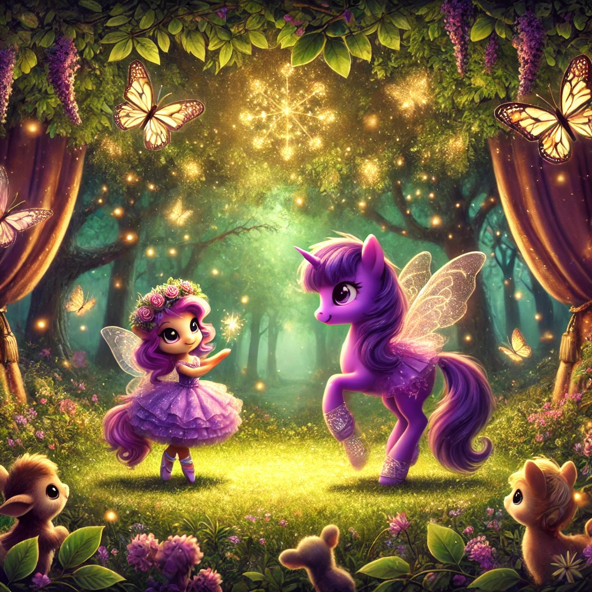

La Bailarina del Bosque

Había una vez, en un tranquilo valle lleno de flores y arroyos, un pony morado llamado Violeta. Violeta era un pony muy especial, porque siempre había soñado con convertirse en una bailarina. Aunque todos sus amigos caballos disfrutaban de correr y saltar, Violeta prefería mover sus cascos al ritmo de la música y girar en círculos como si estuviera en un escenario.
Cada día, mientras los demás ponies galopaban por los campos, Violeta se quedaba practicando sus pasos de baile. Imitaba los movimientos de las bailarinas que había visto en los libros y soñaba con el día en que pudiera bailar frente a un gran público.
Un día, mientras Violeta estaba practicando en su claro favorito del bosque, escuchó un suave murmullo entre los árboles. Al seguir el sonido, encontró a una pequeña hada llamada Aurora. Aurora tenía unas alas brillantes y una varita mágica que destellaba con cada movimiento.
"Hola, Violeta," dijo Aurora con una sonrisa. "He visto cuánto te esfuerzas por bailar y quiero ayudarte a cumplir tu sueño."
Violeta, emocionada, escuchó atentamente mientras Aurora le contaba sobre un mágico escenario en el corazón del bosque, donde cualquier sueño podía hacerse realidad. Con la ayuda de la varita mágica de Aurora, Violeta podría convertirse en una verdadera bailarina y bailar frente a todas las criaturas del bosque.
Juntas, Violeta y Aurora se adentraron en el bosque hasta llegar a un claro iluminado por luces doradas. En el centro, había un escenario hecho de hojas y flores, rodeado de mariposas y luciérnagas que brillaban como estrellas.
Aurora agitó su varita y, de repente, Violeta sintió una cálida energía recorriendo su cuerpo. Miró hacia abajo y vio que llevaba puesto un hermoso tutú de color lila y unos zapatitos de baile brillantes. Con una gran sonrisa, Violeta subió al escenario y comenzó a bailar.
Sus movimientos eran fluidos y elegantes, como si siempre hubiera sido una bailarina. Giraba y saltaba con gracia, mientras las mariposas la seguían en una danza mágica. Todos los animales del bosque se reunieron para ver el espectáculo y aplaudieron con alegría cuando Violeta terminó su actuación.
Desde ese día, Violeta bailó en el escenario mágico cada vez que tenía la oportunidad. Aunque seguía siendo un pony, nunca dejó de soñar y de seguir practicando, sabiendo que los sueños pueden hacerse realidad con un poco de magia y mucha perseverancia.
Y así, Violeta vivió feliz, bailando y compartiendo su pasión con todos los que conocía, demostrando que los sueños pueden volverse realidad si nunca dejas de creer en ellos.
Y colorín colorado, este cuento se ha acabado. Buenas noches, Alondra. ¡Dulces sueños!